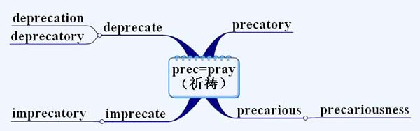
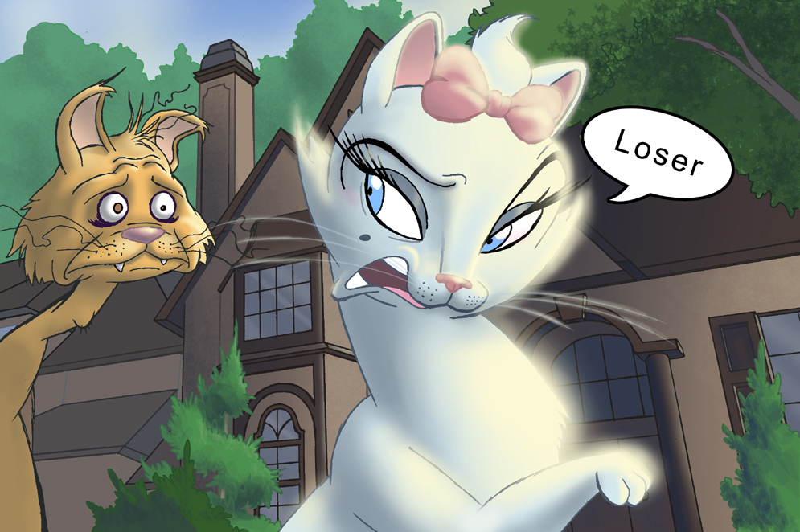
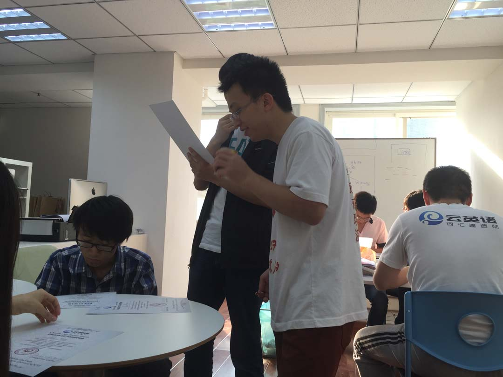

云英语
云英语：因学术而改变

今天有学生从美国问我（她VB学了一半，8月份回来Y-GRE）， precarious "不安定的，不稳固的"在词源上与 spray "祈祷"同源，它们的词义是如何关联的？而 precarious 的同源词imprecarious，只是在前面加个im-前缀，为什么词义就变成了"诅咒"？
我们先看precarious，它和我们熟知的pray"祈祷，祈求"是同源词，都来自PIE *prek-=祈求。precarious的本义指"通过求而得到的"（意味着自己并不能完全把握），后来演变为"不安定的，不稳固的，（前提）不可靠的"。比如一个学生考试，除了写个名字，剩下什么都不知道；那么他只能去pray祈求自己人品爆发，只能pray祈求运气好，这样才有一丁点可能不挂科。这样他过的生活就是a precarious life。
[示例] He earned a precarious livelihood by gambling.
他过着不安定的生活，朝不保夕，夕不保朝，靠赌博为生。
a precarious house that perches on the treetop
【图为一个栖息于树端之上不稳固的、摇摇欲坠的房子】
既然precarious表示"不安定的"，为什么imprecarious却表示"诅咒"呢?
实际上，imprecarious这词现代英文不常用，常用的是它的动词形式imprecate。
要理解imprecate，得先从同源词deprecate说起。deprecate=de(away)-prec(pray)-ate，本义指"pray against"祈求远离××；后面通常接不好的东西，如deprecate the evil"祈求远离邪恶"。这样，它就可以引申指"把一个东西视作极度不好的"，进而表示"谴责"的意思（类似"呸呸呸"）。而且它还受到了形近词depreciate=de(down)-preci(price)-ate"贬低/轻视其价值"的影响，所以也可以引申指"鄙视"。
deprecate the loser
【图为鄙视人生输家】
而前文提到的imprecate正好跟deprecate"祈求远离××"相反。imprecate=im(in,前缀in在拉丁语常指on的意思)-prec(pray)-ate，指"祈求××的降临"。按说，pray祈祷是祈求好的结果，但imprecate祈求的是不好的东西；跟deprecate一样，后面宾语都是接evil的东西。所以imprecate指"祈求（降祸于）"，实际上就是"诅咒"的意思。
voodoo doll
【图为巫毒娃娃】
[示例] With her dying breath, the witch imprecated (evil upon) the villagers for their persecution of her.
女巫还剩最后一口气时，祈求降祸于村民们，因为他们曾经迫害她。
witch's imprecation
【图为女巫的诅咒】
其实，imprecate本来后面会接"evil upon"，后来evil upon这一部分省略了，直接接宾语，意思还是表示"祈求降祸于××之上"。
这么说吧，"上帝救救他吧"，叫做pray，pray是祈求好的结果好的东西（降到××身上）；"上帝弄死他吧"，叫做imprecate，imprecate是祈求坏的结果坏的东西（降到××身上）。
【图为拯救无数北大学生GRE成绩的曹子聪督学】
版权所有 2011-2015 云英语 Y-English All Rights Reserved
地址：北京市海淀区五道口华清嘉园商务会馆802
电话：400-876-3898 010-82863898 82863899 传真：010-82863897